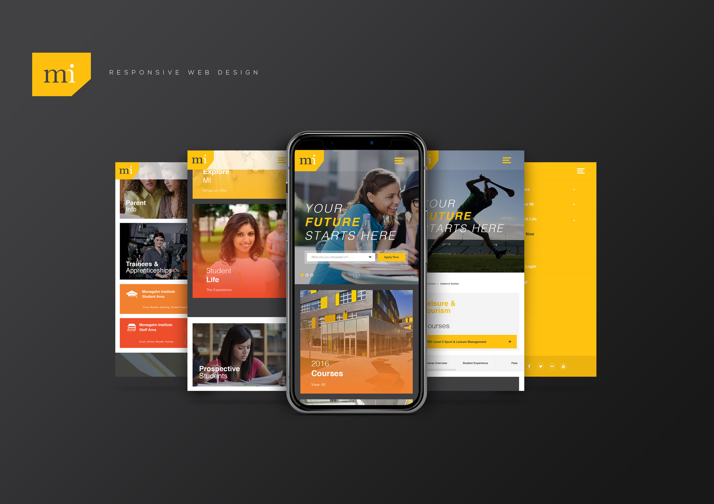
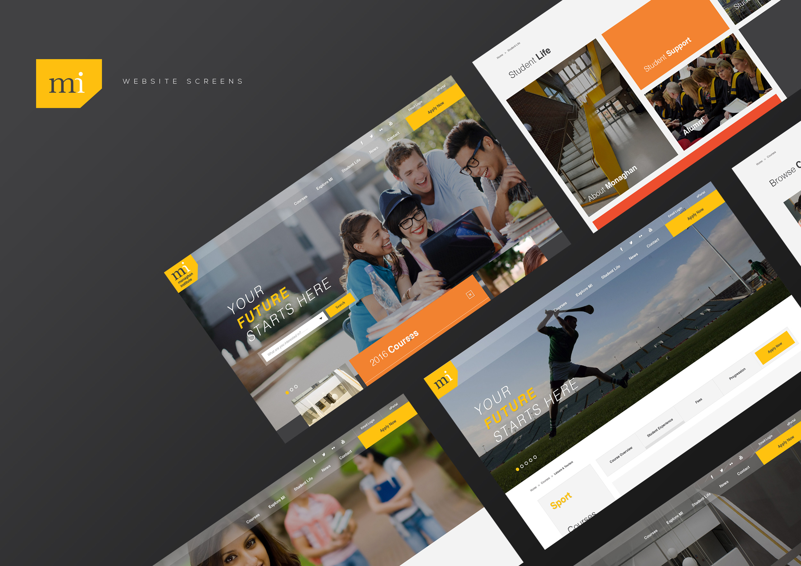
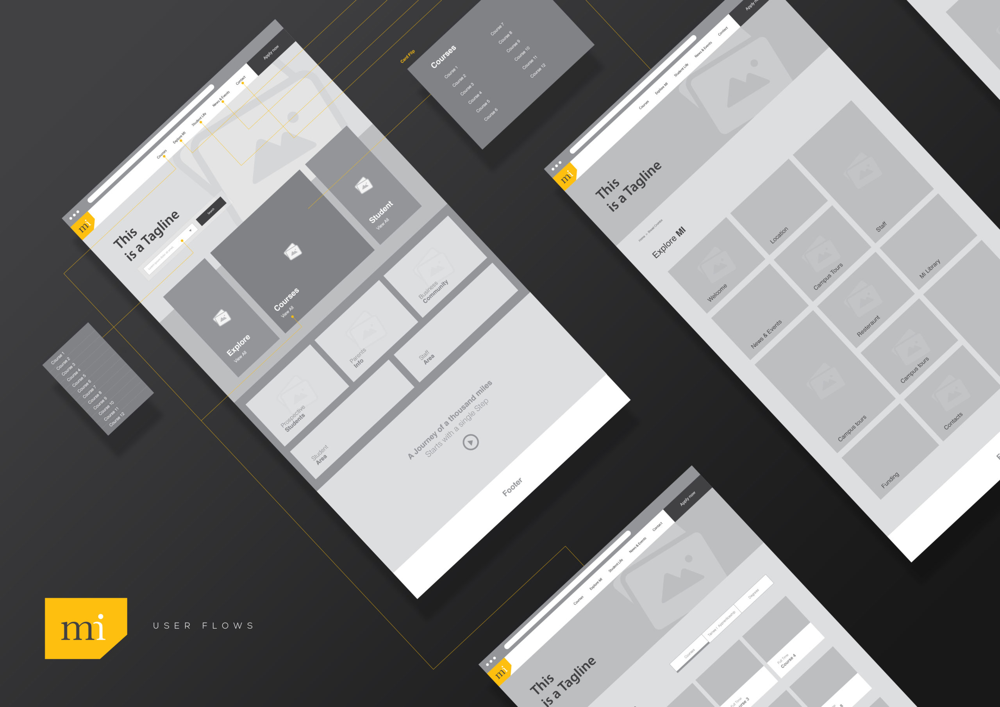
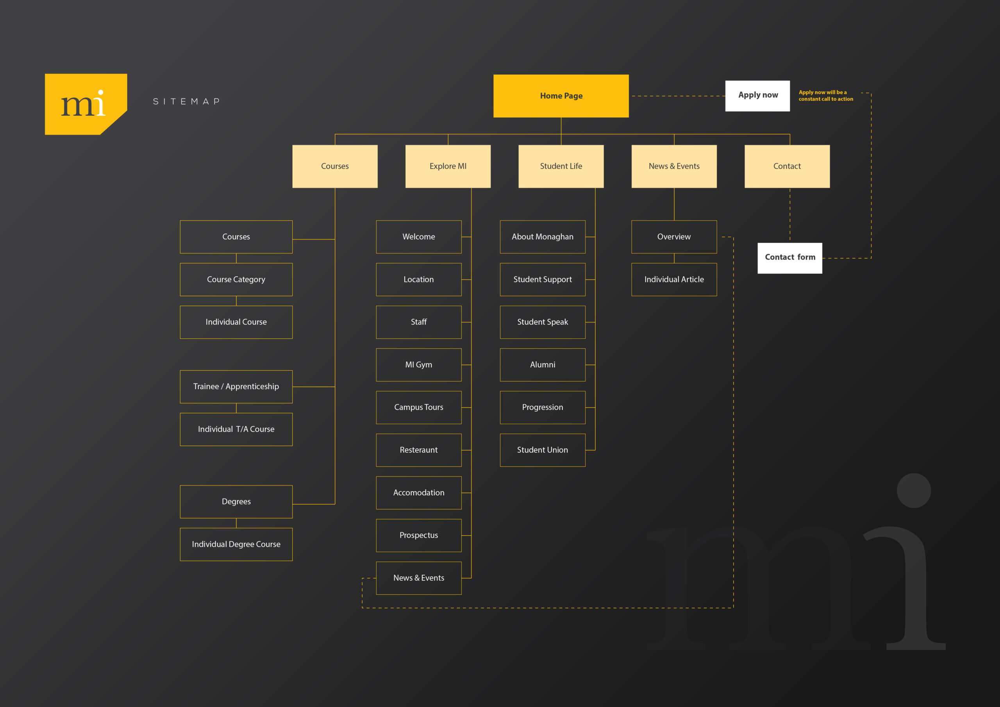
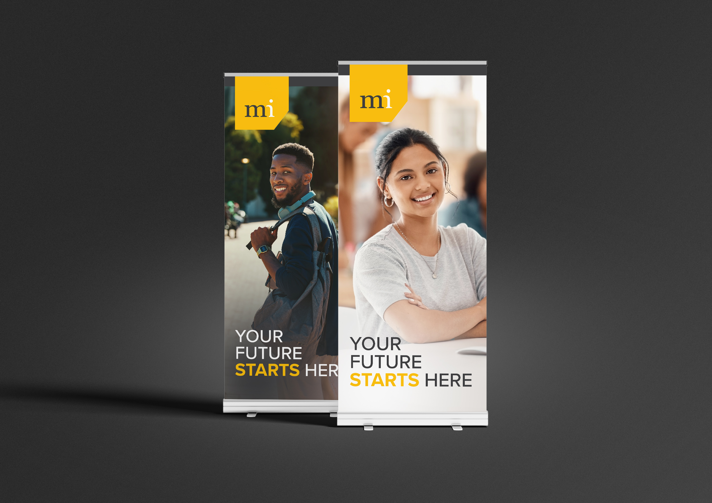
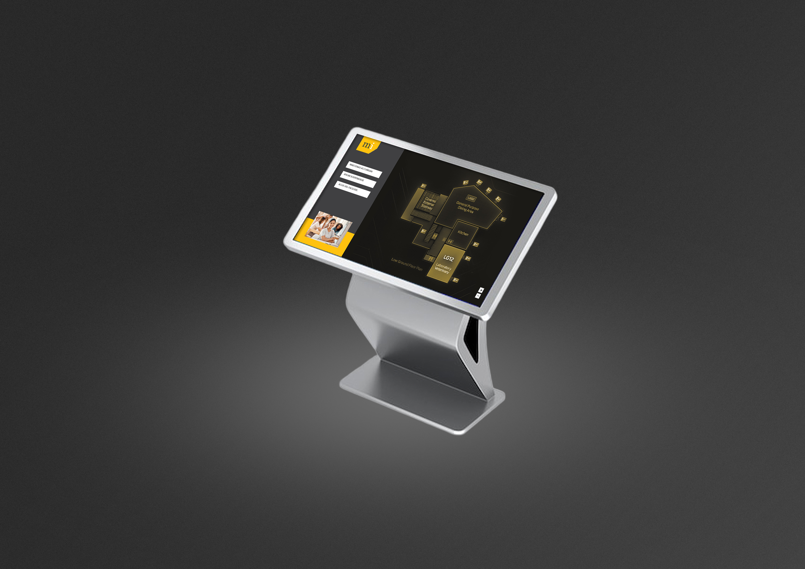
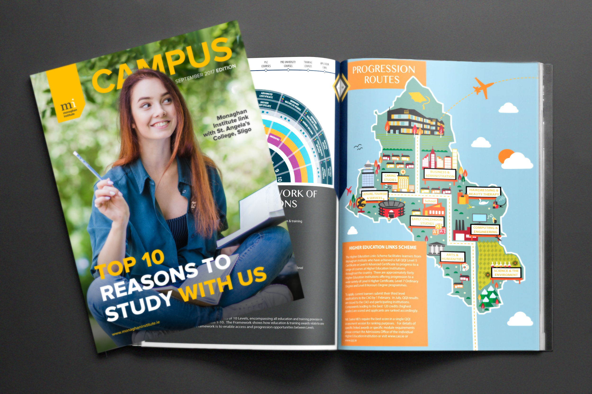
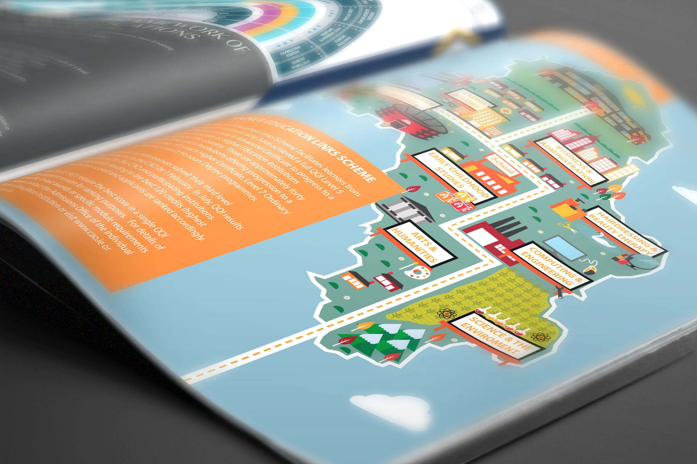

Work / 2017
Monaghan Institute
Creating the Future
Monaghan Institute offers more than 40 PLC and FET courses. I refreshed the college's digital brand and rebuilt its website around clear journeys for applicants, students and staff, anchored by the statement of intent: 'Your Future Starts Here.'

Student-first by design
I defined a confident, student-centric tone carried through concise, bite-sized content patterns, and extended the visual system for screen: strong typographic hierarchy, accessible colour contrast, and photography that conveys energy and progression.

Journeys and components
Priority journeys, find a course, apply, student life, staff resources, drove a simplified navigation. A component-based design system means new programmes and content slot in without redesign, with accessibility best practice and responsive layouts throughout.


Recognised results
Traffic rose 250% in the first four weeks after launch, and the work won Best in Universal Design at the IIA Net Visionary Awards and the Spider Awards, a modern platform that lifts the Institute's reputation regionally and nationally.



